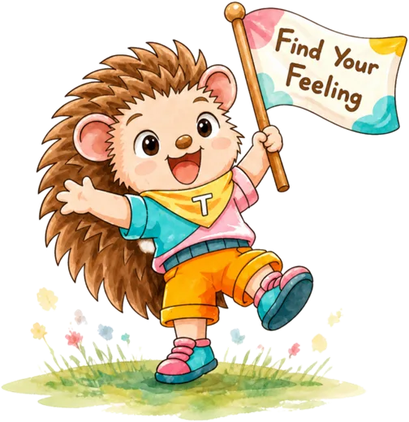

Pusat Bantuan
Kamu tidak harus menghadapinya sendirian. Pilih bantuan yang paling nyaman untukmu.
Dalam bahaya atau ingin menyakiti diri sendiri?
Segera hubungi layanan berikut, atau minta orang terdekat menemanimu ke IGD rumah sakit terdekat.
Bantuan di sekitarmu
Guru BK
Guru Bimbingan Konseling di sekolahmu siap mendengarkan dan bisa membantu merujuk ke psikolog.
[Isi nama & kontak guru BK sekolahmu]
Puskesmas
Banyak Puskesmas sudah memiliki layanan kesehatan jiwa. Kamu bisa datang dan bilang ingin konsultasi psikologi.
[Isi Puskesmas terdekat dan jadwal layanannya]
Psikolog / Psikiater
Untuk pemeriksaan dan penanganan lebih lanjut, termasuk diagnosis PTSD bila memang ada.
[Isi biro psikologi atau RS rujukan di Surakarta]
Cara mulai cerita
Tidak perlu kalimat sempurna. Kamu bisa mulai dengan:
"Bu/Pak, saya mau cerita. Akhir-akhir ini saya sering teringat kejadian yang bikin saya takut, dan itu mengganggu sekolah saya."
Bawa hasil skrining HEALO kalau mau, sebagai bahan awal obrolan.

Nomor layanan dicek pada November 2026. Pastikan nomor masih aktif sebelum aplikasi dibagikan.